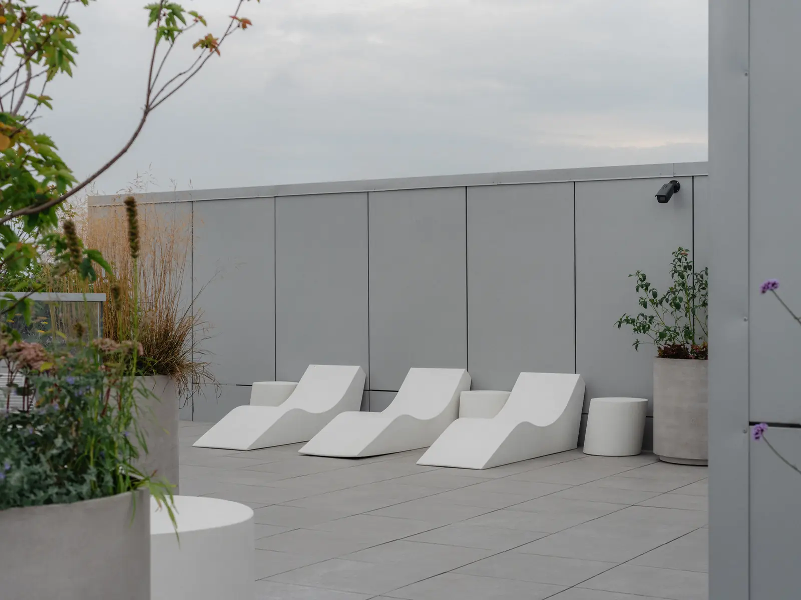
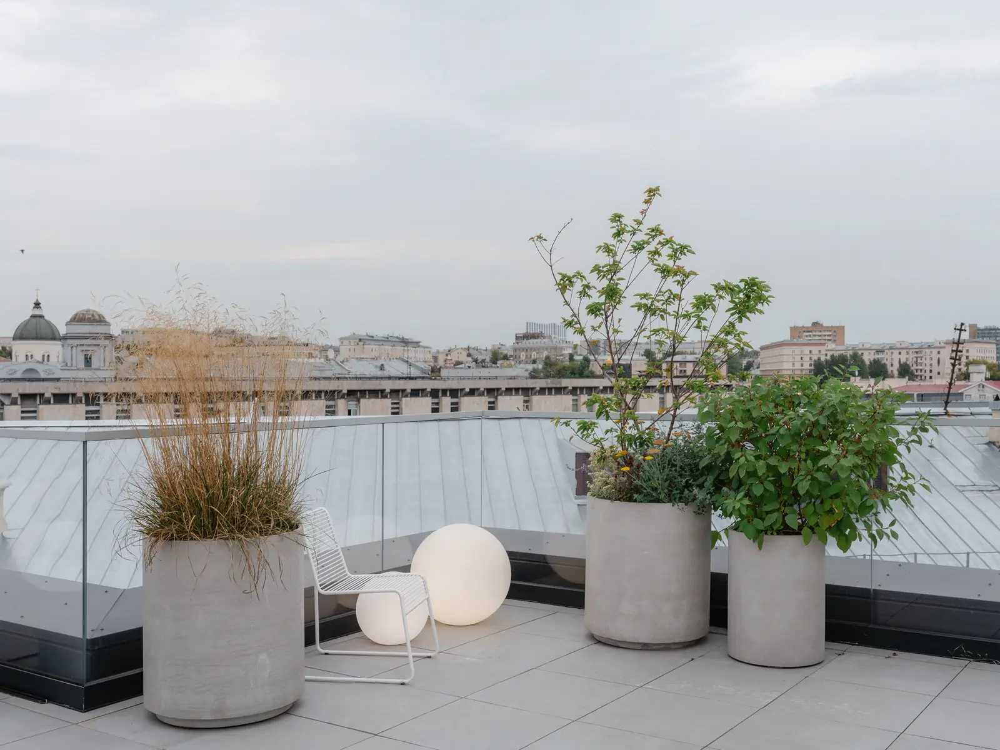
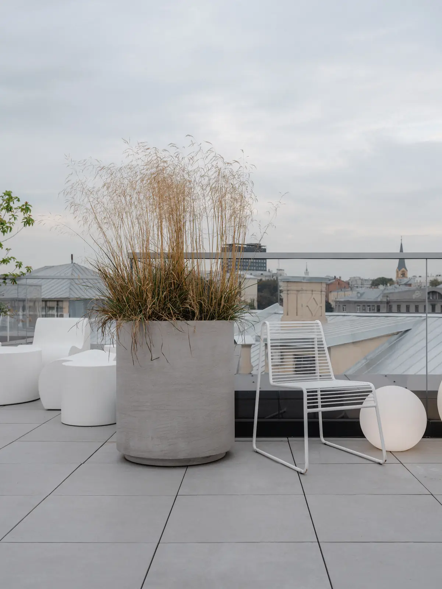
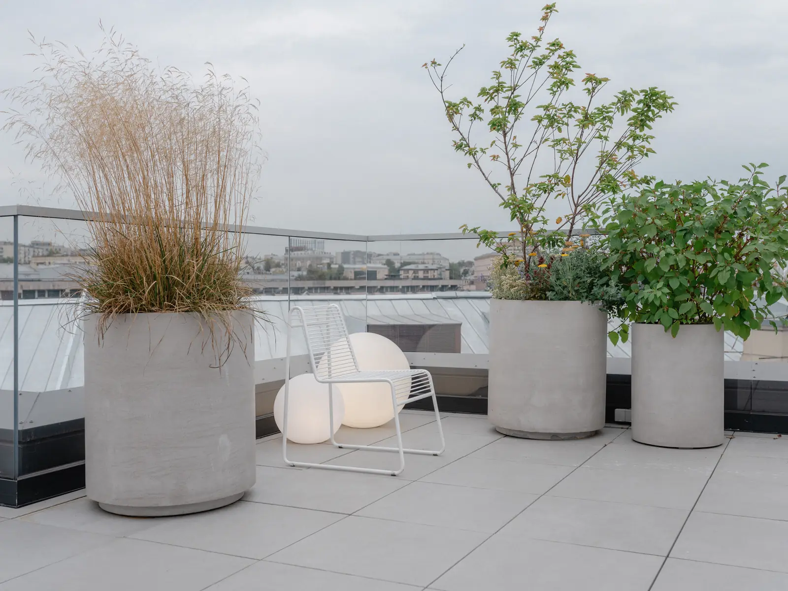
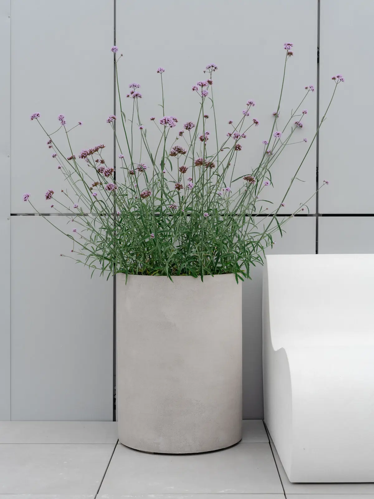

lumin house
Терраса клубного дома Lumin House у Славянской площади тесно окружена городской застройкой. Сад отвечает архитектуре дома: стеклянный фасад делает свет главным, а интерьеры держатся на серой гамме с фиолетовыми акцентами.
Технологичная белая мебель и мягкий фон из растений с веточками дёрена и многолетниками фиолетовых оттенков. Основа посадок — клён Гиннала и дёрен ‘Сибирика’, устойчивые к вымерзанию корней в кашпо.
Сад в бетонных кадках разного размера поддерживает структуру мебели и открывает виды на панораму Китай-города сквозь зелень.



